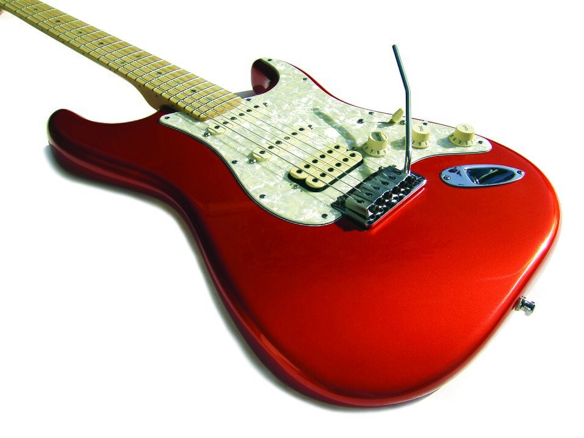

Can Kayan
Mühendis · Gitarist
Altı yaşından beri müzikle iç içeyim. Yolculuğuma piyanoyla başladım. On iki yaşımda gitarla tanıştım ve o günden beri elimden bırakmadım.
Asıl mesleğim mühendislik, ancak gitarla olan bağımı hiçbir zaman koparmadım. Tarz ayırt etmeden her türlü gitar müziği ilgimi çekiyor.
Lise yıllarımda üç kez liselerarası müzik yarışmasına katıldım. Bunlardan birinde grubumuzla İstanbul'da finalistler arasına girdik.
Kısaca
- 6 yaşında piyanoyla müziğe başlangıç
- 12 yaşından beri gitar
- 3 kez liselerarası müzik yarışması, 1 kez İstanbul finalisti